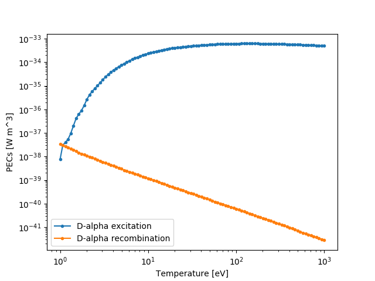

Photon Emissivity Coefficients¶
Some example code for requesting PEC objects and sampling them with the __call__() method.
>>> import numpy as np
>>> import matplotlib.pyplot as plt
>>> from cherab.core.atomic import deuterium
>>> from cherab.openadas import OpenADAS
>>>
>>> # initialise the atomic data provider
>>> adas = OpenADAS()
>>>
>>> # request d-alpha instance of ImpactExcitationRate
>>> dalpha_excit = adas.impact_excitation_rate(deuterium, 0, (3, 2))
>>> # request d-alpha instance of RecombinationRate
>>> dalpha_recom = adas.recombination_rate(deuterium, 0, (3, 2))
>>>
>>> # settings for plot range
>>> temp_low = 1
>>> temp_high = 1000
>>> num_points = 100
>>> electron_density = 1E19
>>> electron_temperatures = [10**x for x in np.linspace(np.log10(temp_low), np.log10(temp_high), num=num_points)]
>>>
>>> # sample the PECs with __call__()
>>> dalpha_excit_pecs = [dalpha_excit(electron_density, te) for te in electron_temperatures]
>>> dalpha_recom_pecs = [dalpha_recom(electron_density, te) for te in electron_temperatures]
>>>
>>> # plot the PEC rates
>>> plt.figure()
>>> plt.loglog(electron_temperatures, dalpha_excit_pecs, '.-', label="D-alpha excitation")
>>> plt.loglog(electron_temperatures, dalpha_recom_pecs, '.-', label="D-alpha recombination")
>>> plt.xlabel("Temperature (eV)")
>>> plt.ylabel("PECs (W m^-3)")
>>> plt.legend()
>>> plt.show()

{kind=link}
Caption: A plot of balmer D-alpha PEC coefficients generated by the above code snippet.